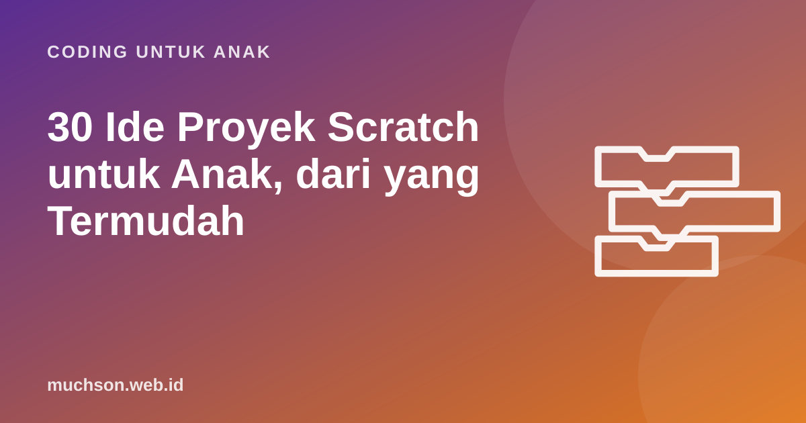

Beranda › Artikel › Coding untuk Anak
Coding untuk Anak30 Ide Proyek Scratch untuk Anak, dari yang Termudah
Pertanyaan "aku mau bikin apa?" sering menghentikan anak sebelum mulai. Daftar ini berisi 30 ide proyek Scratch yang disusun dari yang paling mudah sampai menantang, lengkap dengan konsep yang dilatih. Pilih yang sesuai minat dan level anak, lalu biarkan ia memodifikasinya menjadi versinya sendiri.

Cara memilih proyek yang tepat
Proyek terbaik memenuhi dua syarat: menarik bagi anak dan sedikit di atas kemampuannya saat ini. Psikolog Lev Vygotsky menyebut wilayah ini zona perkembangan proksimal: tugas yang belum bisa dikerjakan sendiri, tetapi bisa dikerjakan dengan sedikit bantuan. Terlalu mudah membuat bosan; terlalu sulit membuat frustrasi.
Level 1: proyek pertama (urutan, kejadian dasar)
| Ide | Yang dibuat | Konsep |
|---|---|---|
| 1. Animasi nama | Setiap huruf nama bergerak, berputar, atau berubah warna saat diklik | kejadian klik, efek |
| 2. Kartu ucapan | Ucapan ulang tahun dengan musik dan tokoh yang menari | urutan, suara |
| 3. Akuarium | Ikan berenang bolak-balik dan memantul di tepi | loop, pantulan |
| 4. Perkenalan diri | Tokoh menceritakan hobi dan cita-cita anak | urutan, katakan |
| 5. Hari di kebun binatang | Klik hewan, hewan bersuara dan bergerak | kejadian klik |
| 6. Pemandangan berganti | Siang menjadi malam dengan matahari terbenam | latar, meluncur |
| 7. Robot menari | Robot berganti kostum mengikuti ketukan | kostum, tunggu, loop |
Level 2: interaktif (loop, tombol, pesan)
| Ide | Yang dibuat | Konsep |
|---|---|---|
| 8. Piano mini | Tombol keyboard memainkan nada berbeda | kejadian tombol, ekstensi Musik |
| 9. Drum band | Klik alat musik untuk memainkan irama | kejadian klik, suara |
| 10. Dialog dua tokoh | Percakapan yang tertata | siarkan pesan |
| 11. Komik bergerak | Cerita 4 adegan | pesan, ganti latar |
| 12. Hewan peliharaan virtual | Klik makanan, hewan senang | kejadian, kostum |
| 13. Pelukis spiral | Pena menggambar pola spiral warna-warni | ekstensi Pena, loop |
| 14. Kendalikan roket | Roket bergerak dengan tombol panah | kejadian tombol, koordinat |
| 15. Jam dinding | Jarum berputar setiap detik | loop, derajat |
Level 3: game sederhana (kondisi, koordinat)
| Ide | Yang dibuat | Konsep |
|---|---|---|
| 16. Labirin | Gerakkan bola ke finis tanpa menyentuh dinding | kondisi menyentuh warna |
| 17. Tangkap bintang | Tangkap benda yang jatuh | acak, kondisi, loop |
| 18. Kejar-kejaran | Musuh mengejar penunjuk mouse | mengarah ke, kondisi |
| 19. Pong | Bola memantul di antara dua pemukul | pantulan, arah |
| 20. Lompat rintangan | Tokoh melompat menghindari batu | koordinat y, kondisi |
| 21. Tebak warna | Klik warna yang sesuai tulisan | kondisi, acak |
| 22. Balapan | Dua tokoh berlomba, mana yang sampai duluan | acak, posisi x |
Level 4: game lengkap (variabel, clone)
| Ide | Yang dibuat | Konsep |
|---|---|---|
| 23. Kuis matematika | Pertanyaan acak, skor, dan waktu | variabel, tanya, operator |
| 24. Hujan meteor | Hindari meteor yang makin banyak | clone, variabel, level |
| 25. Chatbot sederhana | Robot yang menjawab sesuai kata kunci | tanya, kondisi, teks |
| 26. Whack-a-mole | Pukul tikus yang muncul acak | clone, skor, waktu |
| 27. Penembak luar angkasa | Tembak alien yang turun | clone, kondisi |
| 28. Platformer 1 level | Tokoh melompat di pijakan dengan gravitasi | variabel kecepatan, kondisi |
| 29. Simulasi tabungan | Masukkan uang saku, lihat tabungan bertambah | variabel, daftar |
| 30. Ensiklopedia hewan | Klik hewan untuk membaca fakta dari daftar | daftar, pesan |
Ide nomor 29 dan 30 menggabungkan coding dengan pelajaran lain. Proyek lintas mata pelajaran seperti ini bisa menjadi tugas sekolah yang berkesan.
Ubah ide orang lain menjadi milik sendiri
Komunitas Scratch punya budaya remix: mengambil proyek orang lain, lalu mengembangkannya dengan menyebut pembuat aslinya. Remix boleh dan bagus untuk belajar, asalkan anak menambah sesuatu, bukan sekadar menyalin. Pertanyaan pemicu yang berguna:
- Bagaimana kalau tokohnya diganti dengan sesuatu yang kamu suka?
- Bagaimana kalau ada level 2 yang lebih sulit?
- Bagaimana kalau dimainkan berdua?
- Aturan apa yang bisa dibalik? Misalnya justru menghindari bintang.
Dari ide ke karya yang selesai
Ide sebanyak apa pun tidak berarti bila proyek tidak pernah selesai. Bantu anak dengan tiga kebiasaan: tulis rencana singkat, buat versi paling sederhana dulu yang sudah bisa dimainkan, lalu tambah fitur satu per satu. Jika anak lebih suka jalur yang sudah disusun, PixelKode memberi proyek berurutan dengan contoh hasil interaktif, sehingga anak tahu persis targetnya sebelum mulai menyusun blok.
Tanya jawab
Proyek Scratch apa yang paling mudah untuk pemula?
Berapa lama satu proyek Scratch?
Apakah boleh me-remix proyek orang lain?
Bagaimana jika anak hanya mau membuat game?
Sumber dan bacaan lanjut
- Scratch: jelajahi proyek komunitas
- Scratch untuk pendidik
- Brennan & Resnick (2012). Praktik memakai ulang dan me-remix
- Resnick, M. Lifelong Kindergarten: projects, passion, peers, play